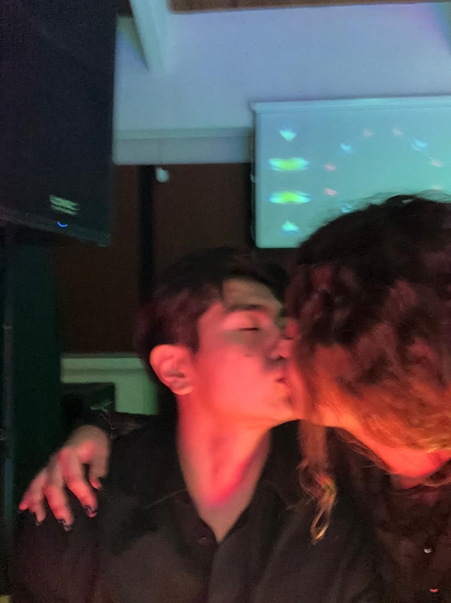
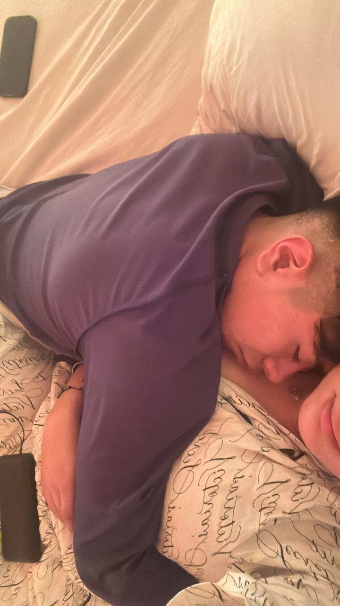
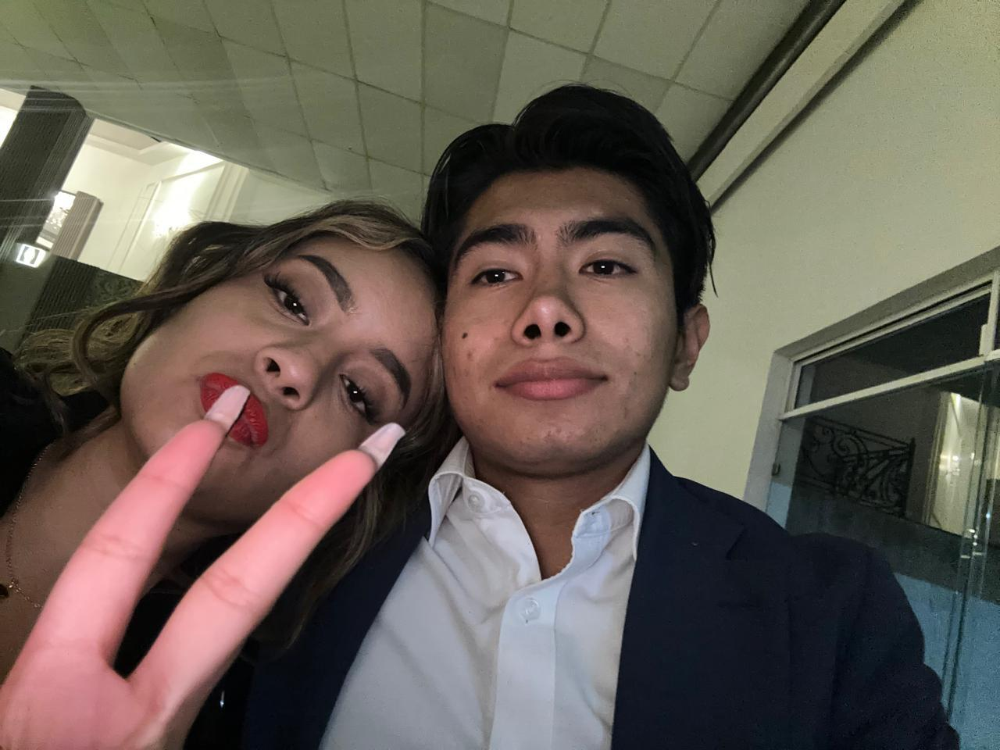
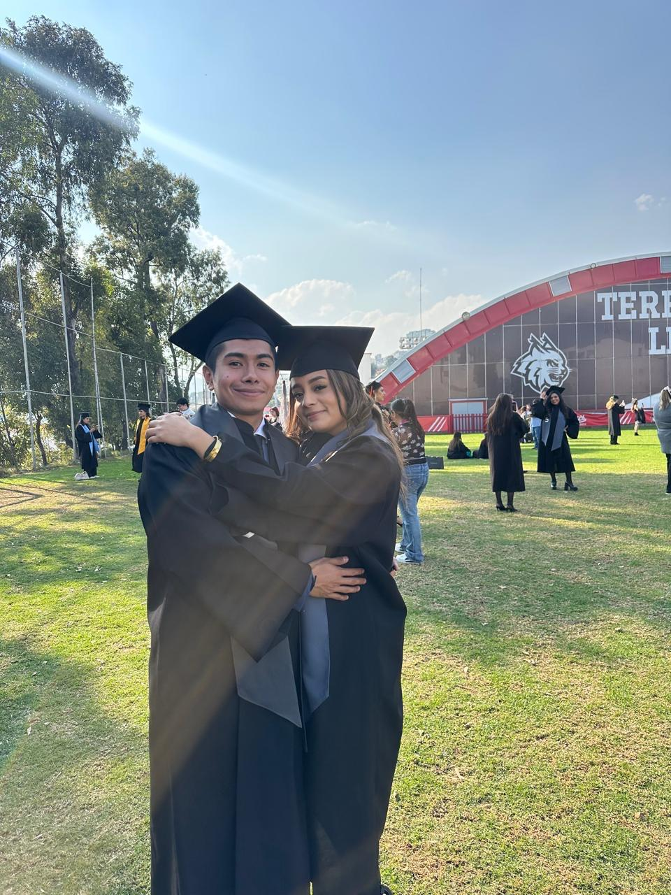

PROJECT
Hay historias que comienzan mucho antes de que alguien las descubra.
ANTES DE EMPEZAR
A partir de aquí, nada aparece por casualidad.
Tu historia
Cada capítulo es una parte de nuestra historia.
CAPÍTULO 1
El primer capítulo no empieza con un regalo. Empieza con recuerdos que parecen haber estado esperando.
CAPÍTULO 1



No todo lo importante se planea.

Esto es solo el comienzo.
PRÓLOGO
Toca un objeto del cofre